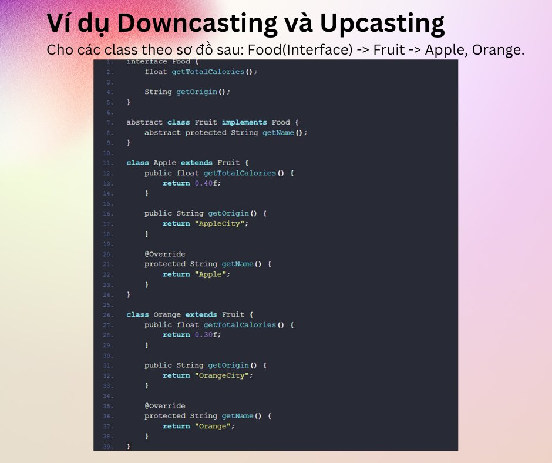
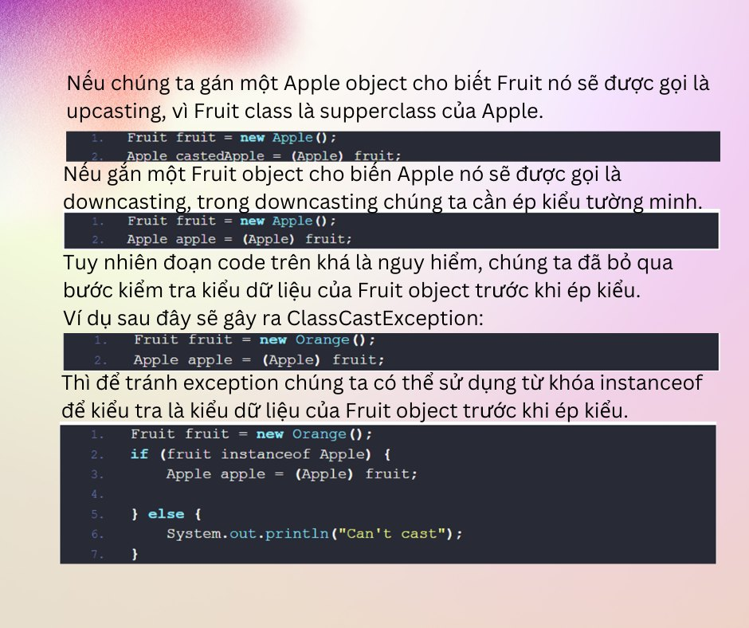
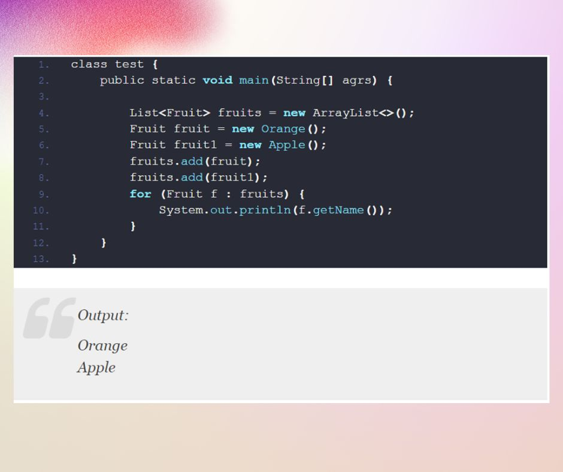
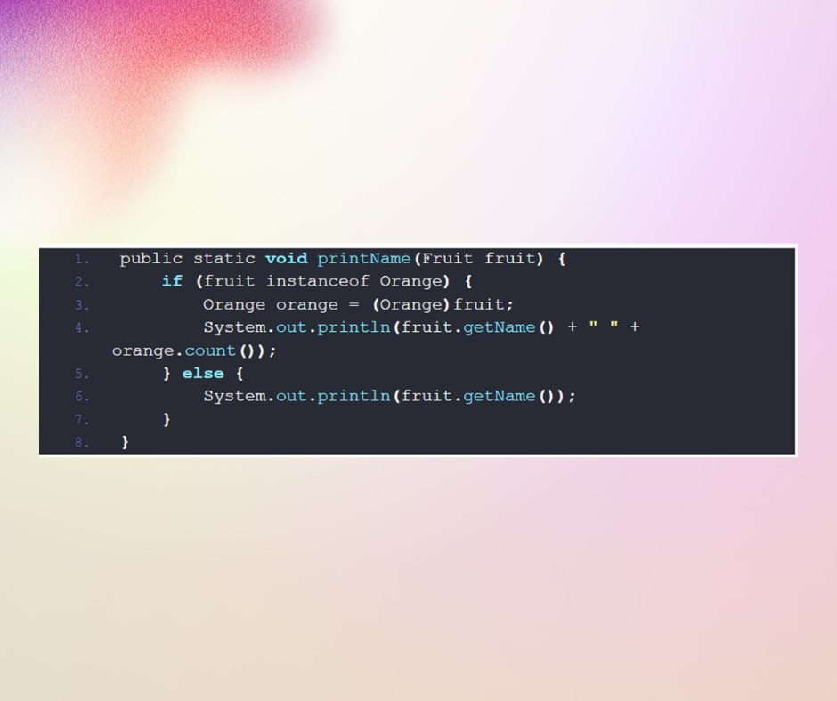

Polymorphism (Part 3)
🔰Tiếp nối bài viết về tính đa hình trong java thì hôm nay mình sẽ giới thiệu cho các bạn về 2 keywords đầu tiên là Upcasting và Downcasting.
🧑💻 Cơ chế Upcasting và Downcasting trong java là gì?
Tại sao lại cần Upcasting và Downcasting?
📍Cơ chế Upcasting và Downcasting trong java:
- Upcasting là gán object của subclass cho biến tham chiếu supperclass, trong khi Downcasting gán object của supperclass cho biến tham chiếu subclass.
- Khi thực hiện downcasting chúng ta cần kiểm tra kiểu dữ liệu của object trước khi gán giá trị để tránh lỗi ClassCastException.
📍Tại sao cần Upcasting.
Upcasting được sử dụng nhiều trong tính đa hình lập trình hướng đối tượng, một biến kiểu dữ liệu supperclass có thể tham chiếu đến tất cả các object subclass.
Sử dụng tính chất này chúng ta không phải khai báo kiểu dữ liệu cụ thể cho các object subclass class.
📍Tại sao cần Downcasting.
Sử dụng downcasting khi chúng ta cần sử dụng các tính chất riêng của subclass mà ở supperclass không có.
Ví dụ Orange class định nghĩa thêm 1 method count() trả về số lượng orange còn trong kho.
Khỏi tạo printName() method xuất tên của Fruit object từ tham số đầu vào, nếu là Orange thì xuất luôn số lượng.